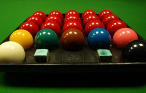

Топки
Топките в снукъра, както и в другите билярдни игри, най-често се правят от фенолова смола, но са по-малки от стандартните топки в игри като Осма топка. Стандартната топка за снукър е с диаметър 52,4 мм, въпреки че често има известни отклонения от този размер. За домашните маси с размери намалени на половина се произвеждат и по-малки топки. В играта на снукър участват 15 червени топки, 6 цветни (жълта, зелена, кафява, синя, розова и черна), и една бяла топка-бияч. Въпреки, че в официалните правила на играта никоя от топките не е номерирана, цветните топки понякога се обявяват.
В началото на всеки фрейм (игра) топките се подреждат по точно определен начин. За цветните топки има точно определени позиции на масата, на които те се връщат след вкарването им в джобовете. За разлика от тях за червените има само начална позиция и те остават в джобовете след вкарването си. Жълтата, кафявата и зелената топки се подреждат върху боук линията като кафявата се поставя в средата на боук линията, а жълтата и зелената се поставят на пресечените точки на боук линията с полуокръжността, така че гледано от боук края жълтата да е от дясната страна. Позицията на синята топка е точно в средата на масата, на средата на разстоянието между двата средни джоба. Розовата топка се поставя по средата между синята топка и горния борд на масата, а червените се поставят във формата на триъгълник, така че да са максимално близо до розовата без да я докосват. Черната топка се поставя на 12,75 инча от горния борд.